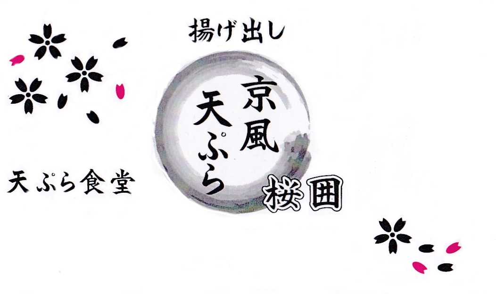

創業丸３年になる本格「和天ぷら」のお店、「桜囲」。
季節の旬のお野菜などをこだわった調理法「揚げ出し」により作られる和天ぷらは絶品。
他にも「心、感謝、配慮」店主の暖かさからリピーターも多く、その魂のこもった料理をぜひご堪能ください。
和の落ち着きを感じさせる空間。
店主が厳選した新鮮な食材を使用し、お客様に美味しく召し上がっていただくことを第一に考えたこだわりの天ぷらです。

食の安心と安全を
誰が見てもわかりやすく、伝わりやすく
感謝と配慮を込めた、おもてなし
営業時間: 11:00ー20:00(定休日:日曜)
住 所:〒902-0065
那覇市壺屋1丁目 1−22
電話番号: TEL(098)869-9255